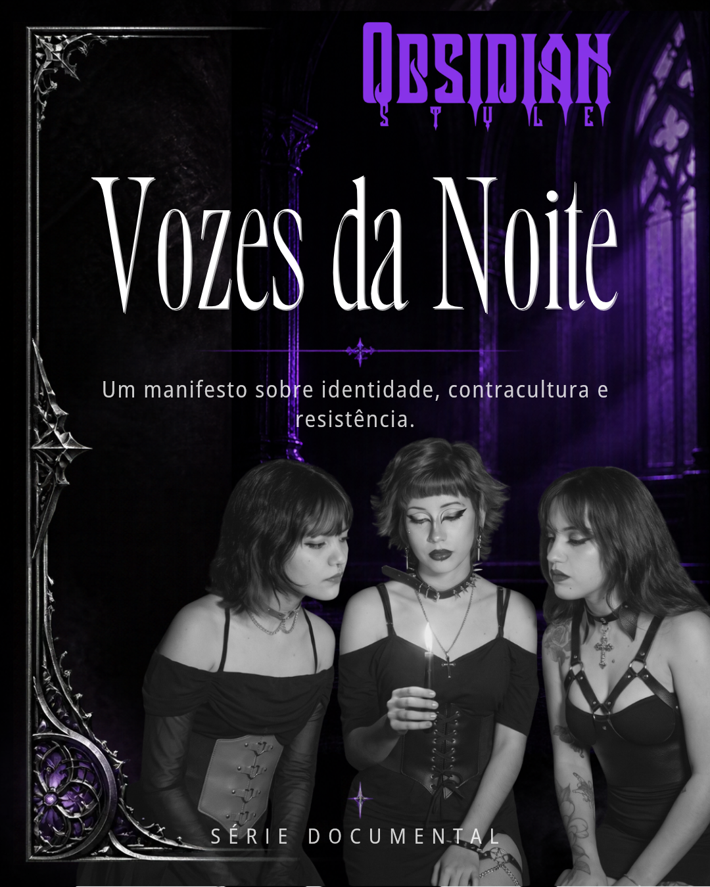

01
Introdução ao universo alternativo
Uma abertura dinâmica e descontraída, com pequenas prévias dos próximos capítulos, para apresentar o universo alternativo e despertar curiosidade.
Uma websérie transmídia sobre identidade, expressão e as pessoas que dão vida à cultura alternativa.

Vozes da Noite nasceu para aproximar o público das experiências de quem faz parte da cena alternativa. Com linguagem dinâmica e olhar atento às diferenças, o projeto propõe histórias que questionam estigmas e ampliam perspectivas.
A Obsidian Style integra a narrativa como uma marca ligada à cena, especialmente no episódio dedicado à sua trajetória e à criação de acessórios. O portal Noctivivium reúne e apresenta essa produção.
O primeiro episódio é o piloto produzido pelo grupo; os quatro seguintes são propostas de continuidade da narrativa.
Uma abertura dinâmica e descontraída, com pequenas prévias dos próximos capítulos, para apresentar o universo alternativo e despertar curiosidade.
Uma imersão em eventos, espaços e manifestações da cena alternativa, mostrando sua estética, seus ambientes e suas práticas sem idealizações.
Relatos pessoais e conversas sobre identidade e vivências para conhecer as pessoas para além das aparências e desconstruir estereótipos.
A origem, a trajetória e o propósito da Obsidian Style, com um olhar para os acessórios como instrumentos de expressão e para o processo de criação.
A equipe compartilha desafios, descobertas e aprendizados ao documentar uma cultura pouco conhecida por parte de seus integrantes.